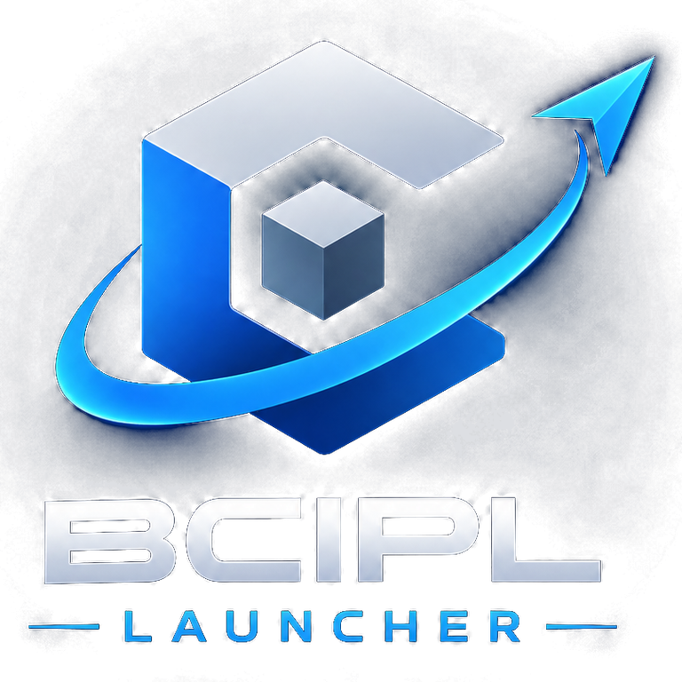

Launch from one place
Access supported, installed Creo environments without searching through folders and desktop shortcuts.

BCIPL LauncherENGINEERING WORKSPACEMeet BCIPL Launcher — a simple desktop hub that helps you start your installed Creo applications from one clean, focused place. Less hunting through shortcuts. More time designing.
A lightweight launcher experience built around a practical idea: keep the tools you use close at hand and make getting started straightforward.
Access supported, installed Creo environments without searching through folders and desktop shortcuts.
A simple desktop layout keeps the launch workflow easy to understand and quick to use.
Designed with engineering teams and their day-to-day CAD work in mind.
The launcher starts configured applications on your Windows computer; it does not replace your Creo installation.
Use a Windows application instead of keeping a browser tab open just to begin your work.
Download the published Windows release, install it, and follow your team's configuration instructions.
Three straightforward steps to get the launcher onto your Windows workstation.
Get the latest Windows installer from the official BCIPL Launcher GitHub release.
Run the installer and follow the on-screen prompts. Use your organization's approved software installation process if required.
Open BCIPL Launcher, choose an available configured environment, and launch the application.
Download BCIPL Launcher for Windows from the official release page. Check the release notes for the current version and installation details.
A few quick answers before you install.
No. BCIPL Launcher is a desktop launcher. The Creo application and any required configuration must already be installed or provided through your organization's normal deployment process.
The Windows installer is intended to package the runtime required by the application. Please test the current release on a supported Windows machine without Java installed and refer to the release notes for the confirmed requirements.
Use the Download for Windows button above. It opens the official GitHub Releases page for this project, where the current release and its assets are published.
Contact your internal engineering or IT support team. Include your Windows version, the launcher version, and any error message so they can help troubleshoot your setup.